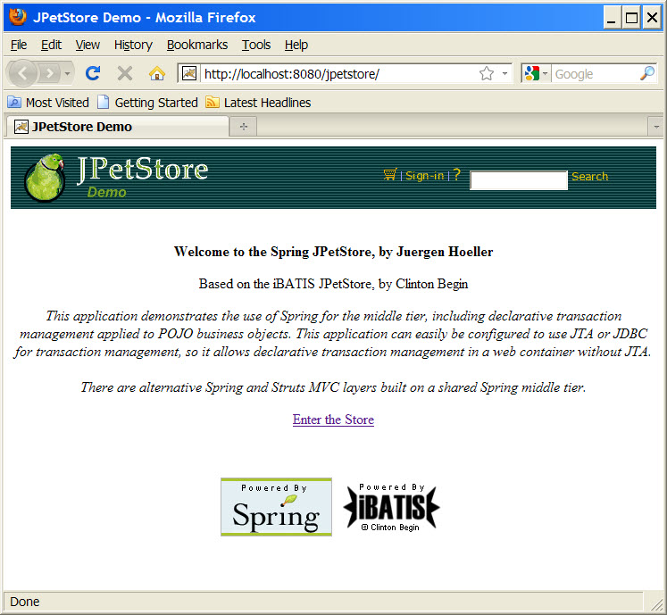
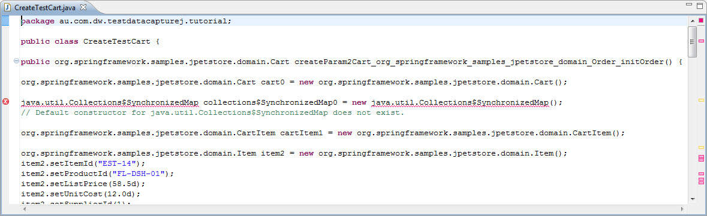
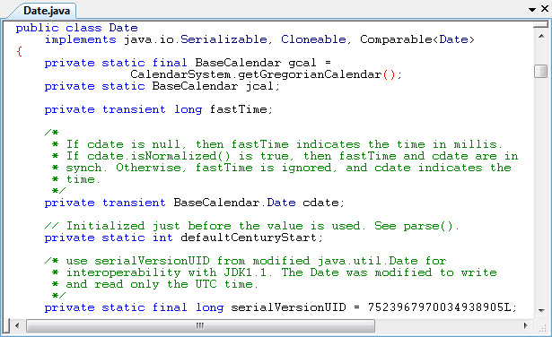
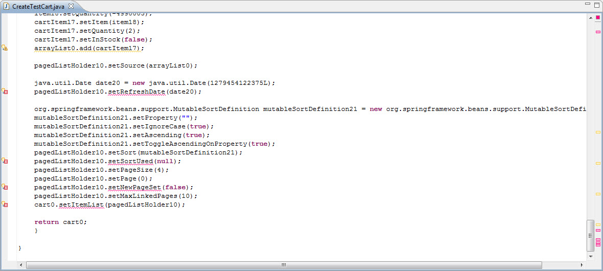

Table of Contents
This tutorial will use the TestDataCaptureJ tool on a web application to demonstrate its usage, using the JPetStore sample application from the Spring Framework 2.x . It will be done in 3 stages to show some of the tool configuration options, as well as some of the limitations of the tool. The instructions are for following the tutorial in a windows environment.
Install and setup the TestDataCaptureJ tool in the Eclipse IDE as per the setup instructions.
Install and setup Tomcat 6.x as the app server, in the tutorial instructions {TOMCAT_HOME} will refer to the location where Tomcat is installed. It is assumed that you will already have a compatible version of Java installed on your server machine and have the appropriate environment setup for it, e.g. JAVA_HOME.
Get a copy of the Spring JPetStore sample application, it should be included in the Spring Framework 2.x download http://www.springsource.org/download.
Alternatively if you have a version of the Spring Framework that does not include the JPetStore sample, you can use Subversion to export a copy from the Spring Framework version control repository. Note that you have to put the JPetStore folder under the samples folder of a Spring Framework 2.x distribution for the build files to work.
https://src.springframework.org/svn/spring-maintenance/trunk/samples/jpetstore/
D:\>svn export https://src.springframework.org/svn/spring-maintenance/trunk/samples/jpetstore/ D:\tutorial\spring-framework-2.5.6.SEC01\samples\jpetstore A D:\tutorial\jpetstore A D:\tutorial\jpetstore\build.bat . . . A D:\tutorial\jpetstore\warfile.bat Exported revision 17168.
Install whatever build tools are required to build the JPetStore application war file, e.g. Ant. Follow the instructions in the readme.txt file for the JPetStore project as they may vary depending on the version of the JPetStore sample that was downloaded.
Build the JPetStore application war file, following the instructions in the readme.txt file for the JPetStore project.
Deploy the JPetStore to the Tomcat server, just need to copy the war file in the target directory to the webapps directory in Tomcat. Before deploying the war file, rename it to 'jpetstore.war' to make it easier to manage if it is called something more complicated.
Setup and start the JPetStore database of your choice in the db directory, the HSQLDB instance is probably the easiest one to use. Once again follow the instructions in the readme.txt file for the JPetStore project.
D:\tutorial\spring-framework-2.5.6.SEC01\samples\jpetstore\db\hsqldb>server.bat . . . [Server@54c4ad]: Database [index=0, id=0, db=file:D:\tutorial\jpetstore\db \hsqldb\jpetstore, alias=] opened sucessfully in 2438 ms. [Server@54c4ad]: Startup sequence completed in 4047 ms. [Server@54c4ad]: 2010-08-12 09:45:54.250 HSQLDB server 1.8.0 is online [Server@54c4ad]: To close normally, connect and execute SHUTDOWN SQL [Server@54c4ad]: From command line, use [Ctrl]+[C] to abort abruptly
Start the Tomcat server and check the console log to ensure that it starts up successfully.
Run the JPetStore app, go through the process of buying some pets and going through the checkout process to make sure it runs successfully.http://localhost:8080/jpetstore/ (replace localhost with your server name if you are not running Tomcat on your local machine)

Stop the Tomcat server.
Now we need to setup the TestDataCaptureJ tool for the JPetStore application.
The tutorial will try to capture the data for the shopping cart containing the pets that have been added to the cart, so that the data can be re-used as input to unit test cases that test the creation of an order from the shopping cart items.
In the file
org.springframework.samples.jpetstore.domain.Order.java there is a
method that creates an order from the contents of the shopping cart. The initOrder()
method has the cart as one of its parameters, and this would be a good place to capture
the cart data as it should contain all the necessary information that we need as this
stage of the checkout process.
Edit conf/META-INF/aop.xml in the TestDataCaptureJ project in
Eclipse to setup the AspectJ pointcut to intercept the parameters of initOrder()
method.
Fragment of 'conf/META-INF/aop.xml':
<aspectj>
<aspects>
<aspect name="au.dom.dw.testdatacapturej.aspect.Trace"/>
<aspect name="au.dom.dw.testdatacapturej.aspect.TraceAdaptor"/>
.
.
.
<!-- For use in the JPetStore tutorial -->
<concrete-aspect name="au.dom.dw.testdatacapturej.aspect.TestSpringPetStoreTrace"
extends="au.dom.dw.testdatacapturej.aspect.TraceAdaptor">
<pointcut name="loggedParamOperations" expression="execution(* org.springframework.samples.jpetstore.*.Order.initOrder(..))"/>
<pointcut name="loggedReturnOperations" expression="if(false)"/>
</concrete-aspect>
</aspects>
.
.
.
</aspectj>The changes involve adding a <concrete-aspect> tag to the xml file nested inside the <aspects> tag.
The 'name' attribute can be any valid java class name you choose, here we have used 'au.dom.dw.testdatacapturej.aspect.TestSpringPetStoreTrace'.
The 'extends attribute must be 'au.dom.dw.testdatacapturej.aspect.TraceAdaptor' since we want our aspect to inherit from that class.
There are 2 pointcuts that need to be defined, since
au.dom.dw.testdatacapturej.aspect.TraceAdaptor has 2
abstract pointcuts that must be implemented in order to create a concrete aspect
class. One pointcut is for intercepting data objects that are parameters for a
method, and the other is for intercepting pointcuts that are return values of a
method.
The <pointcut> tag for 'loggedParamOperations' will have a pointcut
expression for the initOrder() method in
org.springframework.samples.jpetstore.domain.Order.java that
we want to intercept. Because the pointcut will be used in a before advice, it will
capture the parameters for initOrder().
This pointcut was decided upon after looking through the JPetStore source code to find a point where the shopping cart in the checkout process would contain all the data that was required, and would be available as either a parameter or a return value of some method.
The <pointcut> tag for 'loggedReturnOperations' is not used since we want to intercept a parameter in this tutorial rather than a return value. Since the tag needs to be defined to make the aspect class concrete, just use an empty pointcut.
An example of an edited file can be found in the TestDataCaptureJ project at
tutorial/conf/META-INF/aop.xml.
Configure the conf/logback.groovy file for the location (and
possibly the name) of the generated file(s) that we want. This configuration file is setup
with 2 appenders, the default is the 'SIFT' appender which allows each intercepted object
to be logged to a separate file. If instead you want all the logging to go to a single
file, then just configure the logger 'au.com.dw.testdatacapturej-trace' to use the 'FILE'
appender instead, i.e. 'logger("au.com.dw.testdatacapturej-trace", INFO, ["FILE"],
false)'.
The log file locations are also currently setup for use with Tomcat as the app server, by using
Fragment of 'conf/logback.groovy':
.
.
.
appender("FILE", FileAppender) {
file = "${CATALINA_HOME}/logs/Test-${bySecond}.java"
encoder(PatternLayoutEncoder) {
pattern = "// Generated %d%n%m%n"
}
}
.
.
.
appender("SIFT", GSiftingAppender) {
discriminator(MDCBasedDiscriminator) {
key="traceClass"
defaultValue = "unknownValue"
}
sift {
appender("FILE-${traceClass}", FileAppender) {
file = "${CATALINA_HOME}/logs/${traceClass}.java"
encoder(PatternLayoutEncoder) {
pattern = "// Generated %d%n%m%n"
}
}
}
}
.
.
.
// logger for the code generation logging
logger("au.com.dw.testdatacapturej-trace", INFO, ["SIFT"], false)
.
.
.Changing the location for the log files generated by the 'SIFT' appender means editing the 'file' variable to a valid path on your local machine, e.g. 'file = [Your location]/${traceClass}.java'. In this example it has been set so that the generated files will appear in the 'logs' directory in your Tomcat installation. Note that the '${traceClass}' expression must be kept since it is used in the MDC (Mapped Diagnostic Context) for the logging framework and will also contain the file name of the log file which is generated in the code.
Changing the location and/or name of the log file generated by the 'FILE' appender' also means editing the 'file' variable to a valid path and file name on your local machine.
Copy the AspectJ runtime jars needed for load time weaving to {TOMCAT_HOME}/lib. These are aspectjrt.jar and aspectjweaver.jar.
Decide where to put the TestDataCaptureJ and dependency jar files so that they are included in the classpath of the JPetStore web application,. Two possible choices are directly into the web app or setting up a Tomcat shared library directory.
When the JPetStore application war file was first run by Tomcat, it will have been expanded into its own directory, e.g. from 'jpetstore.war' Tomcat would create the directory '{TOMCAT_HOME}/webapps/jpetstore'. Additional jar files could then be copied to '{TOMCAT_HOME}/webapps/jpetstore/WEB-INF/lib' to be included in the classpath of the web application when it is run.
You can also setup a shared library directory in Tomcat, e.g. {TOMCAT_HOME}/shared/lib or whatever location under the Tomcat installation that you want. Any jar files copied here would be shared by the Tomcat web applications.
See the Tomcat documentation on setting up shared libraries.
Copy the dependency jars to the location to be included in the web application classpath. These are:
commons-collections-xxx.jar
commons-configuration-xxx.jar
commons-lang-xxx.jar
commons-logging.jar
Copy the logging framework jars to the location to be included in the web application classpath. These are:
logback-core-xxx.jar
logback-classic-xxx.jar
slf4j-api-xxx.jar
groovy-all-xxx.jar
Make the changes to catalina.bat in {TOMCAT_HOME}/bin so that the AspectJ load-time weaving will be done.
It is a good idea to make a backup of catalina.bat in your Tomcat installation before making changes to it.
Fragment of 'bin/catalina.bat' :
. . . set ASPECTJ_WEAVING=-javaagent:%CATALINA_BASE%\lib\aspectjweaver.jar -Xmx1024m set JAVA_OPTS=%JAVA_OPTS% %ASPECTJ_WEAVING% . . .
The changes involve adding the ASPECTJ_WEAVING variable to the file, and then adding
that variable to be included in the JAVA_OPTS variable. There is a section in
'bin/catalina.bat' where the JAVA_OPTS variable is set, so a good
place to add our changes is at the end of this section. Note that the ASPECTJ_WEAVING
variable must point to the location where you have copied aspectjweaver.jar to your Tomcat
installation.
An example of an edited file can be found in the TestDataCaptureJ project at
tutorial/tomcat/bin/catalina.bat, n. Note this this example file is
from an installation of Tomcat 6.0.26, so may vary slightly from your copy of catalina.bat
if you have installed a different version of Tomcat.
Before the 1st run of the tutorial application, do the following in the TestDataCaptureJ project in Eclipse:
Edit the configuration file 'conf/configuration.properties' so
that there are no custom configuration files used:
As an example see
'tutorial/conf/step.1.configuration.properties' :
# config files for constructor configuration constructor.config.files= # config files for setter method configuration setter.config.files= # config files for collection adder configuration collection.config.files=
This ensures that the TestDataCaptureJ tool will run without any custom configurations for the generated logs.
See the customization page for details of the custom configurations that are available.
Export the project as a jar with AspectJ support to the location to be included in the web application classpath.
See the setup page for details on doing this step.
Start the app server, check the log or console output to make sure it starts without errors. Then run the JPetStore application, what we want to do is to buy some pets and then go through the checkout process.
At the login page just use the default application values.
At the stage where the order is submitted and created during the checkout, the point at which we have setup to capture the test data at Order.initOrder(..) should have been run.
Now check that the log file(s) for the test data has been created, and contains the java code to re-create the Cart object.
It is assumed that the default 'SIFT' appender is being used for the tutorial, if this has been changed then you need to check the log file location and name that you are using instead.
If we look at the source code for the pointcut that was configured in
'conf/META-INF/aop.xml', it is the parameters for the 'initOrder()'
method of the 'org.springframework.samples.jpetstore.domain.Order' class (<pointcut
name="loggedParamOperations" expression="execution(*
org.springframework.samples.jpetstore.*.Order.initOrder(..))"/>). This method has 2
parameters, the Account and the Cart objects.
Excerpt from
'org/springframework/samples/jpetstore/domain/Order.java' :
package org.springframework.samples.jpetstore.domain;
.
.
.
public class Order implements Serializable {
.
.
.
/* Public Methods */
public void initOrder(Account account, Cart cart) {
.
.
.As you can see, the generated log contains code for 2 methods that re-create objects of the class 'org.springframework.samples.jpetstore.domain.Account' and 'org.springframework.samples.jpetstore.domain.Cart', as these were the parameter types for the 'initOrder()' method for the pointcut that was intercepted.
This is a sample from
'tutorial/logs/org.springframework.samples.jpetstore.domain.Order.initOrder-Parameter1-org.springframework.samples.jpetstore.domain.Account-20110314T174942.java'
:
// Generated 2011-03-14 17:49:42,390
// org.springframework.samples.jpetstore.domain.Order.initOrder:Parameter1
public org.springframework.samples.jpetstore.domain.Account createParam1Account_org_springframework_samples_jpetstore_domain_Order_initOrder() {
org.springframework.samples.jpetstore.domain.Account account0 = new org.springframework.samples.jpetstore.domain.Account();
account0.setUsername("j2ee");
account0.setPassword(null);
account0.setEmail("yourname@yourdomain.com");
account0.setFirstName("ABC");
account0.setLastName("XYX");
account0.setStatus("OK");
account0.setAddress1("901 San Antonio Road");
account0.setAddress2("MS UCUP02-206");
account0.setCity("Palo Alto");
account0.setState("CA");
account0.setZip("94303");
account0.setCountry("USA");
account0.setPhone("555-555-5555");
account0.setFavouriteCategoryId("DOGS");
account0.setLanguagePreference("english");
account0.setListOption(true);
account0.setBannerOption(true);
account0.setBannerName("<image src=\"../images/banner_dogs.gif\">");
return account0;
}This is a sample from
'tutorial/logs/org.springframework.samples.jpetstore.domain.Order.initOrder-Parameter2-org.springframework.samples.jpetstore.domain.Cart-20110314T174942.java'
:
// Generated 2011-03-14 17:49:42,406
// org.springframework.samples.jpetstore.domain.Order.initOrder:Parameter2
public org.springframework.samples.jpetstore.domain.Cart createParam2Cart_org_springframework_samples_jpetstore_domain_Order_initOrder() {
org.springframework.samples.jpetstore.domain.Cart cart0 = new org.springframework.samples.jpetstore.domain.Cart();
.
.
.
return cart0;
}Now we can try out the code that we have generated to check that it has captured the data we want to test, and that we can run unit tests against that data. This involves writing some classes that will incorporate the generated log and some unit tests to test the objects created from that log.
For the purposes of this tutorial this will be done in the Eclipse IDE since it makes it easier to illustrate. However this is not really necessary as you just need to edit the build scripts for the JPetStore project (e.g pom.xml for Maven or build.xml for Ant) so that the unit test files can be run. The changes would need to include the unit test framework jar(s) in the classpath (i.e. using JUnit, TestNG), include the unit test files to be compiled and add some way to run the unit tests from the build script (e.g. as a Maven goal or Ant target). This is left as an exercise for the reader if you do not want to use Eclipse.
Import the JPetStore project as an existing java project into Eclipse.
Configure the build path for the project so that
the JPetStore source files are in a Java Source Folder for the project
the dependency jars for the JPetStore project are included in the Libraries for the Java Project, and are hence in the classpath
Create a directory to store the unit test files, and configure the build path for the JPetStore project to include the test directory as a source folder.
Create a class file, containing an empty class, under the test directory. Let's name the class 'CreateTestObject'.
As an example see
'tutorial/sample/au/com/dw/testdatacapturej/tutorial/CreateTestCart_Empty.java'
:
package au.com.dw.testdatacapturej.tutorial;
public class CreateTestCart {
// copy and paste generated method here
}Copy and paste the contents of the log file, containing the generated code for the Cart object, into the empty class - this is the class that will (eventually) be used to create the test object. For the tutorial we are copying the contents of the log file containing the generated code for re-creating the Cart object, e.g. 'org.springframework.samples.jpetstore.domain.Order.initOrder-Parameter2-org.springframework.samples.jpetstore.domain.Cart-xxx.java',into the empty class.
As an example see
'tutorial/sample/au/com/dw/testdatacapturej/tutorial/CreateTestCart_Step1.java'
:
package au.com.dw.testdatacapturej.tutorial;
public class CreateTestCart {
public org.springframework.samples.jpetstore.domain.Cart createParam2Cart_org_springframework_samples_jpetstore_domain_Order_initOrder() {
org.springframework.samples.jpetstore.domain.Cart cart0 = new org.springframework.samples.jpetstore.domain.Cart();
java.util.Collections$SynchronizedMap collections$SynchronizedMap0 = new java.util.Collections$SynchronizedMap();
// Default constructor for java.util.Collections$SynchronizedMap does not exist.
org.springframework.samples.jpetstore.domain.CartItem cartItem1 = new org.springframework.samples.jpetstore.domain.CartItem();
org.springframework.samples.jpetstore.domain.Item item2 = new org.springframework.samples.jpetstore.domain.Item();
item2.setItemId("EST-14");
item2.setProductId("FL-DSH-01");
item2.setListPrice(58.5d);
.
.
.
pagedListHolder4.setPage(0);
pagedListHolder4.setNewPageSet(false);
pagedListHolder4.setMaxLinkedPages(10);
cart0.setItemList(pagedListHolder4);
return cart0;
}
}When Eclipse tries to build the code for the class file (or if you have autobuild configured for the project) after the log contents have been pasted in, then you will see that it will not compile and has some errors.
The first error that stops the file compiling will occur at this line:
. . . java.util.Collections$SynchronizedMap collections$SynchronizedMap0 = new java.util.Collections$SynchronizedMap(); // Default constructor for java.util.Collections$SynchronizedMap does not exist. . . .
If we look at the JPetStore source, we can see the problem in org.springframework.samples.jpetstore.domain.Cart.java in the itemMap field is created using a java.util.Collections wrapper method instead of new() operator to create the field.
package org.springframework.samples.jpetstore.domain;
import java.io.Serializable;
import java.util.Collections;
import java.util.HashMap;
import java.util.Iterator;
import java.util.Map;
import org.springframework.beans.support.PagedListHolder;
public class Cart implements Serializable {
/* Private Fields */
private final Map itemMap = Collections.synchronizedMap(new HashMap());
.
.
.This is one of the limitations of the TestDataCaptureJ tool, currently there is no way around this yet. For the purposes of this tutorial, we will ignore this for now.
The second error is at this line that is trying to create a Date object:
. . . java.util.Date date8 = new java.util.Date(); date8.setFastTime(1279213622453L); date8.setCdate(null); . . .
The last error occurs near the end of the class:
. . . pagedListHolder4.setSort(mutableSortDefinition9); pagedListHolder4.setSortUsed(null); pagedListHolder4.setPageSize(4); pagedListHolder4.setPage(0); pagedListHolder4.setNewPageSet(false); pagedListHolder4.setMaxLinkedPages(10); cart0.setItemList(pagedListHolder4); return cart0; } }
Since the 'CreateTestCart' class won't compile, for this tutorial make some manual edits to it so that it will compile. This involves commenting out some of the lines that are causing errors and inserting a line to create the field 'collections$SynchronizedMap0' based on the Cart class source (TestDataCaptureJ cannot handle generating code for non-standard object creation, such as the 'java.util.Collections' wrapper methods).
package au.com.dw.testdatacapturej.tutorial;
public class CreateTestCart {
.
.
.
//java.util.Collections$SynchronizedMap collections$SynchronizedMap0 = new java.util.Collections$SynchronizedMap();
java.util.Map collections$SynchronizedMap0 = java.util.Collections.synchronizedMap(new java.util.HashMap());
.
.
.
//cart0.setItemMap(collections$SynchronizedMap0);
.
.
.
//date8.setFastTime(1279213622453L);
//date8.setCdate(null);
//pagedListHolder4.setRefreshDate(date8);
.
.
.
//pagedListHolder4.setSortUsed(null);
.
.
.
//pagedListHolder4.setNewPageSet(false);
.
.
.
//cart0.setItemList(pagedListHolder4);
.
.
.
}
As an example see
'tutorial/sample/au/com/dw/testdatacapturej/tutorial/CreateTestCart_Step1_Edited.java'
:
Create a unit test case that uses the 'CreateTestCart' class to test the data that was generated.
As an example see
'tutorial/sample/au/com/dw/testdatacapturej/tutorial/TutorialTest.java'
:
.
.
.
public class TutorialTest {
@Test
public void testInitOrderCart()
{
// Create the object that contains the pasted generated code for the Cart
CreateTestCart createTestCart = new CreateTestCart();
// invoke the generated method
Cart cart = createTestCart.createParam2Cart_org_springframework_samples_jpetstore_domain_Order_initOrder();
// test the generated data
assertNotNull("cart exists", cart);
assertTrue("cart has corrent number of items" + cart.getNumberOfItems(), cart.getNumberOfItems() == 3);
assertTrue("cart contains specific item id", cart.containsItemId("FL-DSH-01"));
}
}We are using JUnit 4.x for the unit testing as that comes with Eclipse, but you can also use TestNG if you have the TestNG plugin installed in the Eclipse IDE.
Run the unit test 'testInitOrderCart()'.
Although the test case should run using the generated code, we have had to comment out some lines that did not compile for various reasons and so the test should fail. Now we can try to fix some of these issues.
The second error we encountered was with the java.util.Date field. If we look at the source code for 'java.util.Date', then we can see that the reason the error was caused problems are:
The fields 'fastTime' and 'cDate' do not have setter methods, and the 'cDate' field is actually meant to be transient. Therefore the generated setter methods for these fields do not actually exist.
The no-argument constructor for 'java.util.Date' will actually set the internal state to the current date and time at which the object was created, instead of the time in the 'fastTime' field.
To get around these problems we need to run the tutorial application again with some custom configurations included.
Stop the Tomcat server if it is still running, but make sure the JPetStore database server is still running.
Edit the configuration file 'conf/configuration.properties' so
that the customization files 'conf/setter-config.xml' and
'conf/constructor-config.xml' will be used:
As an example see
'tutorial/conf/step.2.configuration.properties' :
# config files for constructor configuration constructor.config.files=constructor-config.xml # config files for setter method configuration setter.config.files=setter-config.xml # config files for collection adder configuration collection.config.files=
This ensures that the TestDataCaptureJ tool will run with the configuration in the files 'setter-config.xml' and 'constructor-config.xml' for the generated logs.
See the customization page for an explanation of customization for constructors and setter methods..
Export the TestDataCaptureJ project as a jar with AspectJ support to the location to be included in the web application classpath, over-writing the jar exported before from the previous run (or if you export with a different file name for the jar, then the jar from the previous run will have to be deleted)
Start the Tomcat server.
Run the JPetStore as before, buying some pets and then going through the checkout process. Check that the generated code has been created in the log file.
As before, either create another empty class file for 'CreateTestCart' and paste the contents of the new log file, containing the generated code for the Cart object into it OR just paste over the generated log in the 'CreateTestCart' class from the previous tutorial run.
As an example see
'tutorial/sample/au/com/dw/testdatacapturej/tutorial/CreateTestCart_Step2.java'
.
Once again this file will not compile properly due to errors that we found in the first run of the tutorial.
However notice that there are fewer errors now because the previous error we had with the java.util.Date field doesn't exist any more. The configuration for TestDataCaptureJ has fixed this problem so that the java.util.Date object is created properly now:
. . . java.util.Date date20 = new java.util.Date(1279454122375L); . . .
instead of the error generated from the previous tutorial run:
. . . java.util.Date date8 = new java.util.Date(); date8.setFastTime(1279213622453L); date8.setCdate(null); . . .
If we look at the xml configuration in the file
'conf/constructor-config.xml', we find that the configuration for
the class 'java.util.Date' is specifying that we want to set the value of the field
'fastTime' from a constructor instead of a setter method. That is, when an object of the
class 'java.util.Date' is to be created in the generated log, instead of using the
default no-argument constructor [new java.util.Date()], it will instead generate a
constructor line that will use the value of the field 'fastTime' as a parameter, e.g.
[new java.util.Date(1279454122375L)]. In addition, it will not generate a setter method
line for the field 'fastTime'.
Fragment of 'conf/constructor-config.xml':
. . . <constructor class="java.util.Date"> <argument> <field-name>fastTime</field-name> </argument> </constructor>. . . .
In the xml configuration in the file 'conf/setter-config.xml',
we find that the configuration for the class 'java.util.Date' is specifying that we want
to ignore the field 'cdate' when it comes to generating setter methods for that class
(i.e. no setter method will be generated for that particular field).
Fragment of 'conf/setter-config.xml':
. . . <setter class="java.util.Date"> <field> <field-name>cdate</field-name> <alternative>ignore</alternative> </field> </setter>. . . .
Of course while we've fixed one of the errors, the other errors will still stop the 'CreateTestCart' class from compiling. If you like you can do another manual edit of the 'CreateTestCart' class to make it compile and then re-run the test case again. Once again the test should fail when run.
As an example see
'tutorial/sample/au/com/dw/testdatacapturej/tutorial/CreateTestCart_Step2_Edited.java'
.
Now we can try to fix some of the other errors.
Another error we encountered was with the 'org.springframework.beans.support.PagedListHolder' field in the Cart class. 
If we look at the Spring framework source code, then we can see that the problem is that the 'refreshDate' and 'newPageSet' fields in the 'org.springframework.beans.support.PagedListHolder' class do not have setter methods (i.e. there is no 'setRefreshDate()', 'setNewPageSet()' or 'setSortUsed()' method defined in the class.
Fragment of 'org.springframework.beans.support.PageListHolder.java'
from the Spring Framework source:
package org.springframework.beans.support;
.
.
.
public class PagedListHolder implements Serializable {
public static final int DEFAULT_PAGE_SIZE = 10;
public static final int DEFAULT_MAX_LINKED_PAGES = 10;
private List source;
private Date refreshDate;
private SortDefinition sort;
private SortDefinition sortUsed;
private int pageSize = DEFAULT_PAGE_SIZE;
private int page = 0;
private boolean newPageSet;
private int maxLinkedPages = DEFAULT_MAX_LINKED_PAGES;
.
.
.In this case, we need to examine the source code to see if we actual need this field for our unit testing. It seems that the 'org.springframework.beans.support.PagedListHolder' class contains some fields which are not required for creating an order, but are purely for the web navigation.
Hence for the purposes of unit testing the contents of the 'org.springframework.samples.jpetstore.domain.Cart' object, we don't really need these web navigation fields so for the purposes of the tutorial we can ignore them in the generated log.
Now we can run the tutorial application again with the updated configuration.
Stop the Tomcat server if it is still running, but make sure the JPetStore database server is still running.
Edit the configuration file 'conf/configuration.properties' so
that in addition to the customization files that we used in the previous run, it will
also include 'conf/jpetstore-test-setter-config.xml' .
As an example see
'tutorial/conf/step.3.configuration.properties' :
# config files for constructor configuration constructor.config.files=constructor-config.xml # config files for setter method configuration setter.config.files=setter-config.xml, jpetstore-test-setter-config.xml # config files for collection adder configuration collection.config.files=
This ensures that the TestDataCaptureJ tool will run with all 3 configuration files for the generated logs.
Export the TestDataCaptureJ project as a jar with AspectJ support to the location to be included in the web application classpath. Once again if you are not over-writing the jar exported from the previous run, then the jar from the previous run will have to be deleted.
Start the Tomcat server.
Run the JPetStore as before, buying some pets and then going through the checkout process. Check that the generated code has been created in the log file.
As before, either create another empty class file for 'CreateTestCart' and paste the contents of the new log file, containing the generated code for the Cart object into it OR just paste over the generated log in the 'CreateTestCart' class from the previous tutorial run.
For the tutorial, as an example look at 'TutorialTest3.java', your log should look similar to this.
Once again the 'CreateTestObject' class file will not compile properly, but also notice that the number of errors has been reduced again. Have a look at the configuration file 'jpetstore-test-setter-config.xml' to see what has changed.
Fragment of 'conf/jpetstore-test-setter-config.xml':
. . . <setter class="org.springframework.beans.support.PagedListHolder"> <field> <field-name>refreshDate</field-name> <alternative>ignore</alternative> </field> <field> <field-name>newPageSet</field-name> <alternative>ignore</alternative> </field> <field> <field-name>sortUsed</field-name> <alternative>ignore</alternative> </field> </setter> . . .
Since we have decided that the class 'org.springframework.beans.support.PagedListHolder' is not relevant to our testing, the additional custom configuration has removed the errors associated with this class from the generated log.
Unfortunately that still leaves several errors in the 'CreateTestObject' class that cannot be currently be fixed by TestDataCaptureJ, these are 3 generated lines that are preventing the file from compiling:
package au.com.dw.testdatacapturej.tutorial;
public class CreateTestObject {
.
.
.
java.util.Collections$SynchronizedMap collections$SynchronizedMap0 = new java.util.Collections$SynchronizedMap();
.
.
.
cart0.setItemMap(collections$SynchronizedMap0);
.
.
.
cart0.setItemList(pagedListHolder10);
.
.
.
}As an example see
'tutorial/sample/au/com/dw/testdatacapturej/tutorial/CreateTestObject_Step3.java'
:
Of course we could continue manually editing the class to make it compile (as in the
example
'tutorial/sample/au/com/dw/testdatacapturej/tutorial/CreateTestObject_Step3_Edited.java'
), but the test case would still fail.
If we look at the source code for 'org.springframework.samples.jpetstore.domain.Cart' we can see why:
package org.springframework.samples.jpetstore.domain;
.
.
.
public class Cart implements Serializable {
/* Private Fields */
private final Map itemMap = Collections.synchronizedMap(new HashMap());
private final PagedListHolder itemList = new PagedListHolder();
.
.
.
public void addItem(Item item, boolean isInStock) {
CartItem cartItem = (CartItem) itemMap.get(item.getItemId());
if (cartItem == null) {
cartItem = new CartItem();
cartItem.setItem(item);
cartItem.setQuantity(0);
cartItem.setInStock(isInStock);
itemMap.put(item.getItemId(), cartItem);
itemList.getSource().add(cartItem);
}
cartItem.incrementQuantity();
}
.
.
.There is no setter method in the 'org.springframework.samples.jpetstore.domain.Cart' class for the field 'itemMap', i.e. no 'setItemMap()' method.
Similarly there is no setter for the field 'itemList', i.e. no 'setItemList()' method.
The only way to add the items to the 'itemMap' collection is through the 'addItem()' method. Unfortunately this is not a straightforward adder method and has side effects.
This shows the limitations of TestDataCaptureJ, we can generate code based on standard conventions and some common patterns, but there is no way to predict every possible way that a class can be designed.
If this was a real project we would need to do some manual changes to make the test case run properly, this may involve:
Changing the source code for 'org.springframework.samples.jpetstore.domain.Cart' to add the setter methods that were generated (generally a bad idea).
Hacking the generated code, perhaps to invoke the 'addItem()' method.
Changing the cart class to a custom cart class that is just used for testing and is the same as 'org.springframework.samples.jpetstore.domain.Cart' except for the addition of the setter methods required.
In several real-life projects in which I have used the TestDataCaptureJ tool, for most objects such as shopping carts or baskets, I have been able to use the generated code with little or no manual editing required. Most of these classes tend to be data objects that follow standard Javabean conventions for setter methods. In fact for the tutorial, if we had wanted to test the 'org.springframework.samples.jpetstore.domain.Account' class instead of the 'org.springframework.samples.jpetstore.domain.Cart' class, then we could have used the generated code without alteration.
This would be done by copying the log file for the Account object into an empty class named 'CreateTestAccount' and then creating a unit test case to test the generated data for an account.
Source code from
'tutorial/sample/au/com/dw/testdatacapturej/tutorial/CreateTestAccount.java':
package au.com.dw.testdatacapturej.tutorial;
public class CreateTestAccount {
public org.springframework.samples.jpetstore.domain.Account createParam1Account_org_springframework_samples_jpetstore_domain_Order_initOrder() {
org.springframework.samples.jpetstore.domain.Account account0 = new org.springframework.samples.jpetstore.domain.Account();
account0.setUsername("j2ee");
account0.setPassword(null);
account0.setEmail("yourname@yourdomain.com");
account0.setFirstName("ABC");
account0.setLastName("XYX");
account0.setStatus("OK");
account0.setAddress1("901 San Antonio Road");
account0.setAddress2("MS UCUP02-206");
account0.setCity("Palo Alto");
account0.setState("CA");
account0.setZip("94303");
account0.setCountry("USA");
account0.setPhone("555-555-5555");
account0.setFavouriteCategoryId("DOGS");
account0.setLanguagePreference("english");
account0.setListOption(true);
account0.setBannerOption(true);
account0.setBannerName("<image src=\"../images/banner_dogs.gif\">");
return account0;
}
}Example test case from
'tutorial/sample/au/com/dw/testdatacapturej/tutorial/TutorialTest.java':
.
.
.
@Test
public void testInitOrderAccount()
{
// Create the object that contains the pasted generated code
CreateTestObject createTestObject = new CreateTestObject();
// invoke the generated method
Account account = createTestObject.createParam1Account_org_springframework_samples_jpetstore_domain_Order_initOrder();
// test the generated data
assertNotNull("account exists", account);
assertEquals("account for specific user", "j2ee", account.getUsername());
}
.
.
.